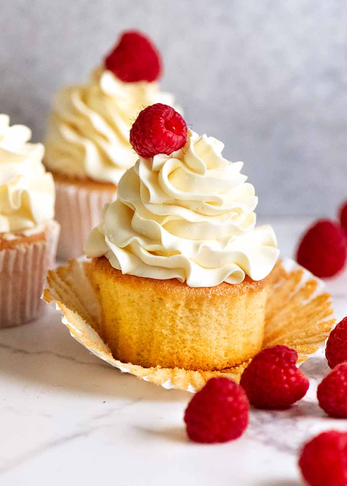
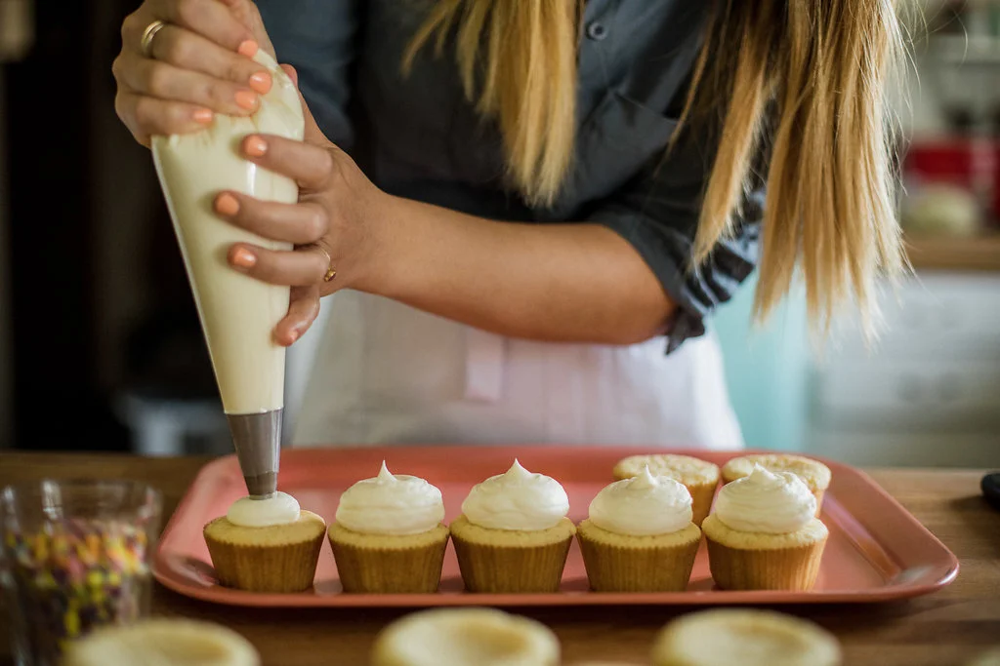
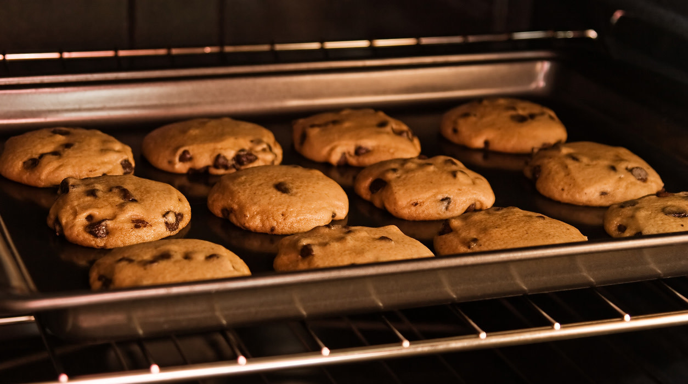
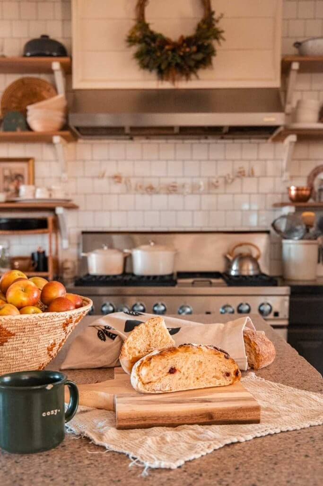
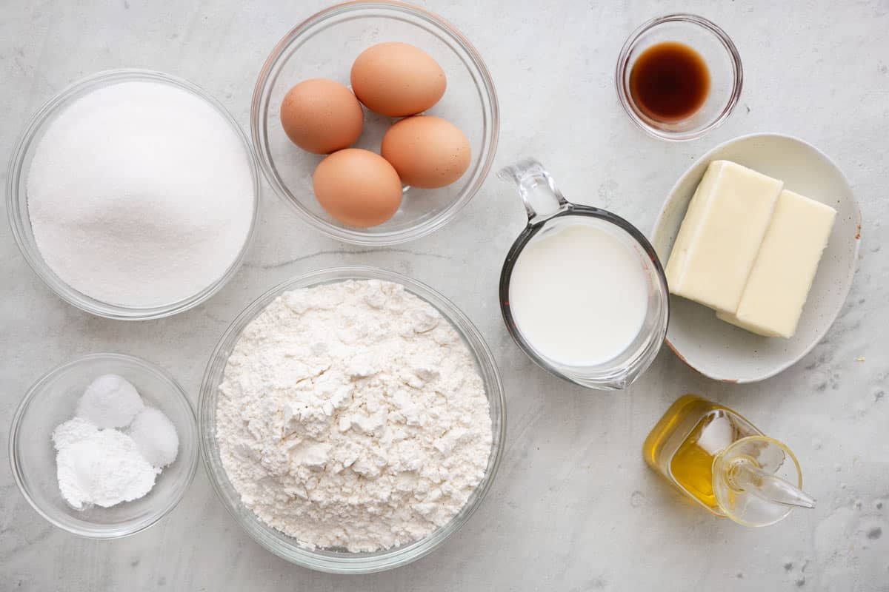
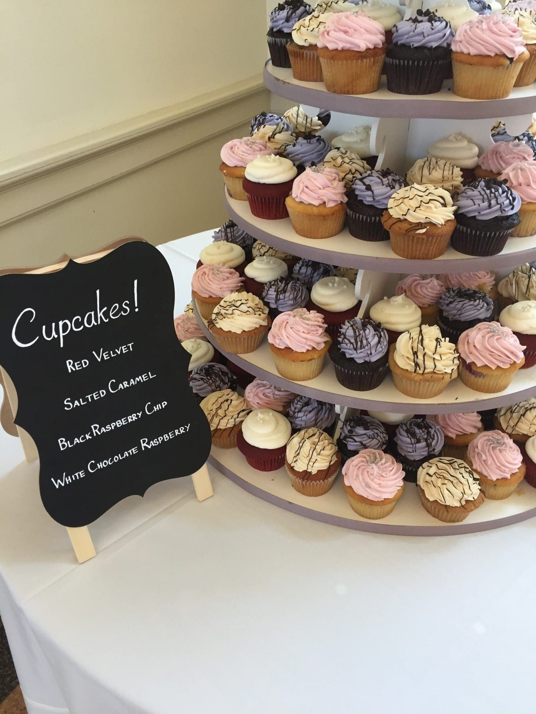

What: Welcome to Baking
Baking is the hobby of creating sweet and savory foods using ingredients like flour, sugar, eggs, butter, and spices.
I enjoy baking because it combines creativity, patience, and comfort food all in one activity.
- Cupcakes
- Cookies
- Cakes

AI prompt: "Create a warm photorealistic image of fresh cupcakes on a cozy kitchen counter."
Who: About Me
I am someone who enjoys relaxing hobbies that still feel productive and creative.
Baking gives me a way to make something beautiful while also sharing it with others.
- Favorite thing to bake: cupcakes
- Favorite flavor: vanilla with strawberry
- Favorite part: decorating

AI prompt: "Create a photorealistic image of someone decorating cupcakes with pastel frosting."
When: Best Times to Bake
Baking is perfect for weekends, holidays, birthdays, or any time I want to make something comforting.
I usually prefer baking in the evening because it feels calm and peaceful.
| Time | Best Bake |
|---|---|
| Morning | Muffins or banana bread |
| Afternoon | Cookies or brownies |
| Evening | Cupcakes or cake |

AI prompt: "Create a photorealistic image of cookies baking in a warm glowing oven."
Where: Best Places to Bake
The best place to bake is a clean kitchen with enough counter space.
Baking can also happen in a dorm kitchen, family kitchen, or small apartment kitchen.
- Home kitchen
- Community kitchen
- Friend’s kitchen

AI prompt: "Create a photorealistic image of a cozy kitchen with baking tools and ingredients."
How: How Baking Works
Baking starts with choosing a recipe and gathering ingredients.
Then, the ingredients are measured, mixed, baked, cooled, and decorated.
- Read the full recipe first.
- Measure ingredients carefully.
- Let baked goods cool before decorating.

AI prompt: "Create a photorealistic image of baking ingredients measured in bowls on a counter."
Why: Why I Like Baking
Baking is fun because it turns simple ingredients into something special.
It also helps me relax and focus on one step at a time.
The best part is sharing the final result with friends or family.

AI prompt: "Create a photorealistic image of decorated cupcakes on a plate ready to share."
AI Prompts
I used AI to help create the structure, wording, and image prompt ideas for this hobby website.
Prompts used:
- "Create a one-page hobby website using HTML, CSS, and JavaScript."
- "Write short section content for a baking hobby website."
- "Give me photorealistic image prompts for a baking website."
AI prompt: "Create a photorealistic image of a laptop next to baking ingredients on a kitchen counter."